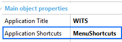

Specifies user-initiated actions for the application. Scope Objects: Menu, Panel, Work With (Only Main Objects) Description
The Application Shortcuts property is available under the Main object properties. With this property, you can define some actions that can be triggered directly from the home screen by the end user. Some use cases of shortcut actions are listed below. There can be many more depending on your application needs.
In GeneXus, simply create a Menu object whose items will be the actions displayed in the shortcut widget. Also, you can associate an icon with each action by using the Image property of the Action node, and change its label through its Description property. The icon defined in the Image property can be set by using:
Finally, set in the Application Shortcut property the Menu object previously created. In iOS devices, the actions available are displayed when the end user uses 3D Touch (applying pressure on the screen when selecting the application icon). Run-time/Design-timeThis property applies only at design-time. Samples
First, create a Menu object and define your application shortcuts. In this case, you will create four actions: play a new game, view the user profile, display the user playlist, and go to the chatroom. Next, associate a custom icon with each action and customize its description. For instance, in the PanelChat action, change the Image and Description properties as follows: Finally, set the MenuShortcut object (previously created) in the Application Shortcuts property of our Main object.  At runtime, the end user will be able to display every action you have defined and select any of them to open it. How to apply changes
CompatibilityAvailable for Android as of Genexus 17 upgrade 3. Available for Apple as of Genexus 15 upgrade 10. See Also
|